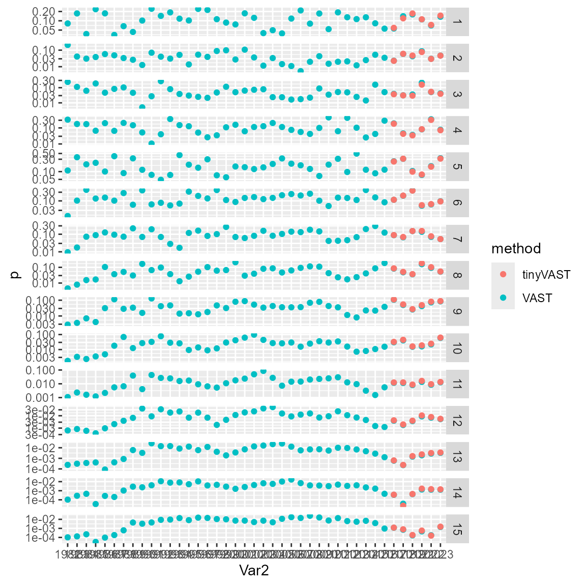

Age composition expansion
James T. Thorson
Source:vignettes/web_only/age_composition_expansion.Rmd
age_composition_expansion.RmdtinyVAST is an R package for fitting vector autoregressive spatio-temporal (VAST) models. We here explore the capacity to use area-expansion to calculate proportion-at-age using spatially unbalanced sampling data.
Expanding age-composition data
To start, we load sampling data that has undergone first-stage expansion. This arises when each primary sampling unit includes secondary subsampling of ages, and the subsampled proporrtion-at-age in each primary unit has been expanded to the total abundance in that primary sample:
data( bering_sea_pollock_ages )
# subset to Years 2010-2023 (to speed up the example)
Data = subset( bering_sea_pollock_ages, Year >= 2010 )
# Add Year-_Age interaction
Data$Age = factor( paste0("Age_",Data$Age) )
Data$Year_Age = interaction( Data$Year, Data$Age )
# Project data to UTM
Data = st_as_sf( Data,
coords = c('Lon','Lat'),
crs = st_crs(4326) )
Data = st_transform( Data,
crs = st_crs("+proj=utm +zone=2 +units=km") )
# Add UTM coordinates as columns X & Y
Data = cbind( st_drop_geometry(Data), st_coordinates(Data) )Next, we construct the various inputs to tinyVAST
# adds different variances for each age
sem = ""
# Constant AR1 spatio-temporal term across ages
# and adds different variances for each age
dsem = "
Age_1 -> Age_1, 1, lag1
Age_2 -> Age_2, 1, lag1
Age_3 -> Age_3, 1, lag1
Age_4 -> Age_4, 1, lag1
Age_5 -> Age_5, 1, lag1
Age_6 -> Age_6, 1, lag1
Age_7 -> Age_7, 1, lag1
Age_8 -> Age_8, 1, lag1
Age_9 -> Age_9, 1, lag1
Age_10 -> Age_10, 1, lag1
Age_11 -> Age_11, 1, lag1
Age_12 -> Age_12, 1, lag1
Age_13 -> Age_13, 1, lag1
Age_14 -> Age_14, 1, lag1
Age_15 -> Age_15, 1, lag1
"
mesh = fm_mesh_2d( loc = Data[,c("X","Y")],
cutoff = 50 )
control = tinyVASTcontrol( getsd = FALSE,
profile = c("alpha_j"),
trace = 0 )We could run the model with a log-linked Tweedie distribution and a single linear predictor:
# Define separate tweedie family for each age
Family = list(
Age_1 = tweedie(),
Age_2 = tweedie(),
Age_3 = tweedie(),
Age_4 = tweedie(),
Age_5 = tweedie(),
Age_6 = tweedie(),
Age_7 = tweedie(),
Age_8 = tweedie(),
Age_9 = tweedie(),
Age_10 = tweedie(),
Age_11 = tweedie(),
Age_12 = tweedie(),
Age_13 = tweedie(),
Age_14 = tweedie(),
Age_15 = tweedie()
)
# Fit model
myfit = tinyVAST(
data = Data,
formula = Abundance_per_hectare ~ 0 + Year_Age,
space_term = sem,
spacetime_term = dsem,
family = Family,
space_column = c("X", "Y"),
variable_column = "Age",
time_column = "Year",
distribution_column = "Age",
spatial_domain = mesh,
control = control
)After the model is fitted, we then apply area-expansion and the epsilon bias-correction method to predict abundance-at-age, and convert that to a proportion:
# Get shapefile for survey extent
data( bering_sea )
# Make extrapolation grid based on shapefile
bering_sea = st_transform( bering_sea,
st_crs("+proj=utm +zone=2 +units=km") )
grid = st_make_grid( bering_sea, n=c(50,50) )
grid = st_intersection( grid, bering_sea )
grid = st_make_valid( grid )
loc_gz = st_coordinates(st_centroid( grid ))
# Get area for extrapolation grid
library(units)
areas = set_units(st_area(grid), "hectares") # / 100^2 # Hectares
# Get abundance
N_jz = expand.grid( Age=myfit$internal$variables, Year=sort(unique(Data$Year)) )
N_jz = cbind( N_jz, "Biomass"=NA, "SE"=NA )
for( j in seq_len(nrow(N_jz)) ){
if( N_jz[j,'Age']==1 ){
message( "Integrating ", N_jz[j,'Year'], " ", N_jz[j,'Age'], ": ", Sys.time() )
}
if( is.na(N_jz[j,'Biomass']) ){
newdata = data.frame( loc_gz, Year=N_jz[j,'Year'], Age=N_jz[j,'Age'])
newdata$Year_Age = paste( newdata$Year, newdata$Age, sep="." )
# Area-expansion
index1 = integrate_output( myfit,
area = areas,
newdata = newdata,
apply.epsilon = TRUE,
bias.correct = FALSE,
intern = TRUE )
N_jz[j,'Biomass'] = index1[3] / 1e9
}
}
N_ct = array( N_jz$Biomass, dim=c(length(myfit$internal$variables),length(unique(Data$Year))),
dimnames=list(myfit$internal$variables,sort(unique(Data$Year))) )
N_ct = N_ct / outer( rep(1,nrow(N_ct)), colSums(N_ct) )Finally, we can compare these estimates with those from package VAST. Estimates differ somewhat because VAST used a delta-gamma distribution with spatio-temporal variation in two linear predictors, and also used a different mesh.
# Load VAST results for same data
data(bering_sea_pollock_vast)
myvast = bering_sea_pollock_vast
rownames(myvast) = 1:15
# Reformat tinyVAST output with same dimnames
mytiny = N_ct
rownames(mytiny) = 1:15
#
longvast = cbind( expand.grid(dimnames(myvast)), "p"=as.numeric(myvast), "method"="VAST" )
longtiny = cbind( expand.grid(dimnames(mytiny)), "p"=as.numeric(mytiny), "method"="tinyVAST" )
long = rbind( longvast, longtiny )
library(ggplot2)
ggplot( data=long, aes(x=Var2, y=p, col=method) ) +
facet_grid( rows=vars(Var1), scales="free" ) +
geom_point( ) +
scale_y_log10()